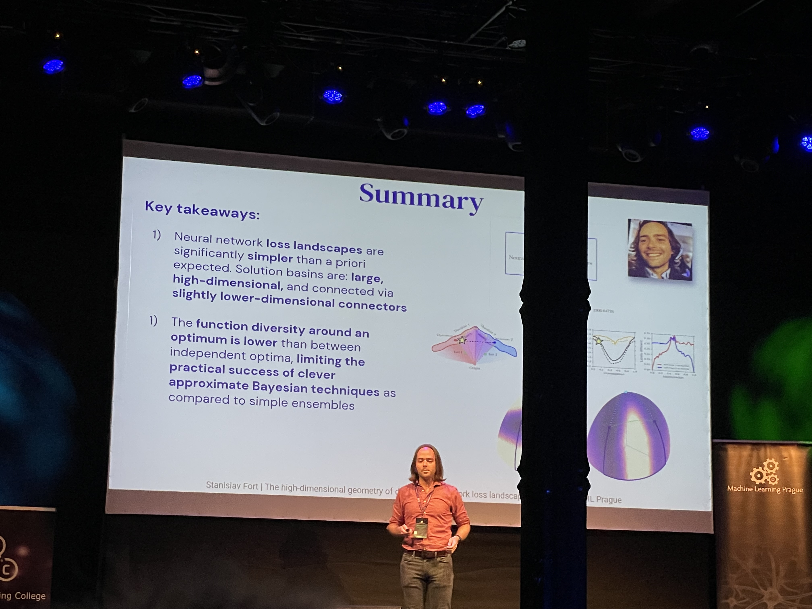

 Last week I went to Machine Learning Prague 2022 - “The biggest European conference about ML AI and Deep Learning.” Every year the event attracts a wide range of very interesting speakers mostly from industry, but also those leading cutting edge research on a daily basis.
While the talks were interesting in and of themselves, I also knew that they would be freely and conveniently distributed online after the event meaning that if I was to go in-person, I better have a justification for the money spent and the necessary time off just to travel to and from the Czech Republic. Closely studying reddit I came to the conclusion that the reason most people go to these sorts of things is to network - meet others involved in the same type of research or, in this case, industry work. So that’s what I decided to do.
Sparking up conversations during the coffee break was relatively easy since the whole reason people come is to do just that, but then how do you reciprocate in a conversation where the other person has just told you about the main challenges they face leading a major ML consulting firm or how the newest developments in EU’s legal landscape on AI have affected their accessibility to mission critical customer data for training and then proceeds to ask
So what company are you from?
and the only truthful answer is
Cool, cool. Oh… I’m in High-School and I like doing ML for fun!
?
Thankfully, the Welcome Drink after the first day of the conference alleviated any such concerns. Industry folks actually become interested once they learn that you took all the initiative to travel and be there, in person, talking with them, not having business in mind. They gladly answer any questions you might have about what doing practical ML is like.
So what did I, in the end, get out of this conference?
I got a taste of what working in the field is like, how the conversations go, just what to expect after I move out of university. I was surprised that people doing serious work are indeed, in many ways, like the characters from HBO’s Silicon Valley and not just all knowing corporate robots. And I encourage anyone even remotely interested in anything to try to and meet others who have tons more experience in the field. It was also interesting to see that even in the context of industry, I could often overhear conversations about AI safety and alignment - seems like people are catching on.
Obligatory, yes GPT-3 did come up with the title of this post…